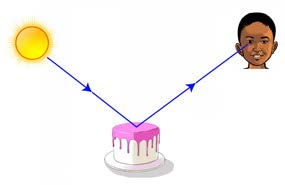

Hatua
1.
Chukua bakuli angavu lililo tupu au bika. Tumbukiza sehemu ya penseli ndani ya bakuli hilo ukiwa umeishikilia.
2.
Chunguza jinsi penseli inavyoonekana.
3.
Mimina maji kutoka kwenye jagi mpaka yafike nusu ya bakuli au bika kama inavyoonekana kwenye Kielelezo namba 12.
4.
Chunguza tena mwonekano wa penseli iliyopo ndani ya bakuli au bika baada ya kuweka maji. Je, kuna tofauti gani kwenye mwonekano wa penseli kabla na baada ya kumimina maji?
Matokeo
Penseli inaonekana imepinda kutokana na miale ya mwanga kupinda
Hitimisho
Jaribio linathibitisha kwamba miale ya mwanga hupinda inapopita kwenye midia angavu tofauti.
Matumizi ya nishati ya mwanga
Mwanga hutumika katika mambo mbalimbali kama inavyooneshwa kwenye Jedwali namba 4.
Jedwali namba 4: Matumizi ya nishati ya mwanga
Picha
Maelekezo

Kuona: Mwanga hutusaidia kuona vitu. Bila mwanga, hatungeweza kuona rangi, maumbo, au vitu vilivyo karibu nasi.
SAYANSI DARASA LA IV KITABU CHA MWANAFUNZI.indd 99
17/09/2025 13:14